Figure fig_ch03_p047_01 (Page 47)
Figure fig_ch03_p047_01 (Page 47)
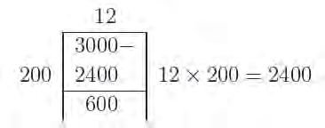
Figure fig_ch03_p047_02 (Page 47)
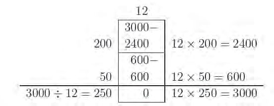
Figure fig_ch03_p047_03 (Page 47)
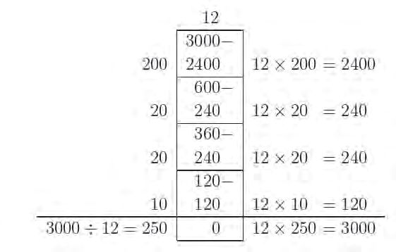
Figure fig_ch03_p047_04 (Page 47)
 Figure fig_ch03_p048_01 (Page 48)
Figure fig_ch03_p048_01 (Page 48)
 Figure fig_ch03_p048_02 (Page 48)
Figure fig_ch03_p048_03 (Page 48)
Figure fig_ch03_p048_02 (Page 48)
Figure fig_ch03_p048_03 (Page 48)
 Figure fig_ch03_p049_01 (Page 49)
Figure fig_ch03_p049_01 (Page 49)
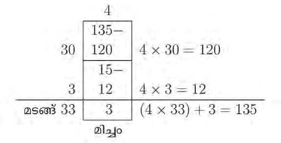
Figure fig_ch03_p049_02 (Page 49)
 Figure fig_ch03_p050_01 (Page 50)
Figure fig_ch03_p050_01 (Page 50)
 Figure fig_ch03_p050_02 (Page 50)
Figure fig_ch03_p050_02 (Page 50)
 Figure fig_ch03_p050_03 (Page 50)
Figure fig_ch03_p051_01 (Page 51)
Figure fig_ch03_p050_03 (Page 50)
Figure fig_ch03_p051_01 (Page 51)
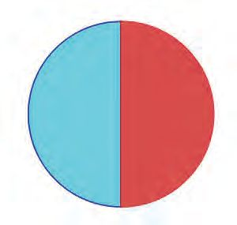
Figure fig_ch03_p051_02 (Page 51)
Figure fig_ch03_p051_03 (Page 51)
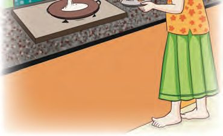
Figure fig_ch03_p051_04 (Page 51)
 Figure fig_ch03_p052_01 (Page 52)
Figure fig_ch03_p052_02 (Page 52)
Figure fig_ch03_p052_03 (Page 52)
Figure fig_ch03_p052_01 (Page 52)
Figure fig_ch03_p052_02 (Page 52)
Figure fig_ch03_p052_03 (Page 52)
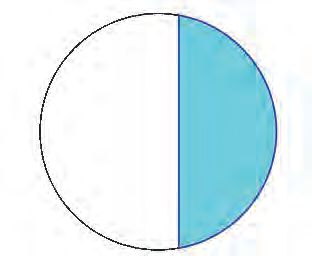
Figure fig_ch03_p052_04 (Page 52)
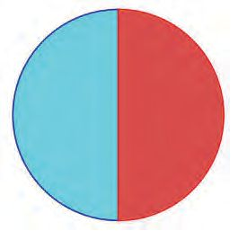
Figure fig_ch03_p052_05 (Page 52)
 Figure fig_ch03_p053_01 (Page 53)
Figure fig_ch03_p053_01 (Page 53)
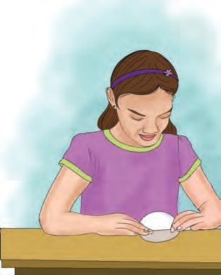
Figure fig_ch03_p053_02 (Page 53)
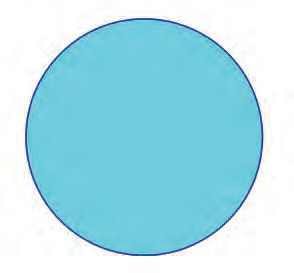
Figure fig_ch03_p053_03 (Page 53)
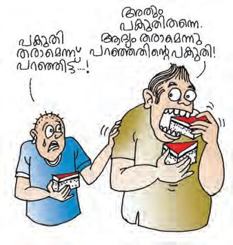
Figure fig_ch03_p053_04 (Page 53)
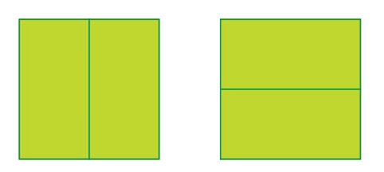
Figure fig_ch03_p053_05 (Page 53)
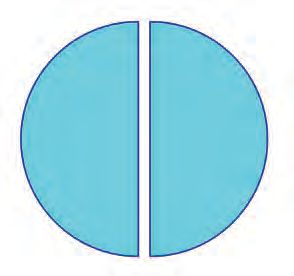
Figure fig_ch03_p053_06 (Page 53)
Figure fig_ch03_p054_01 (Page 54)
Figure fig_ch03_p054_02 (Page 54)
Figure fig_ch03_p054_03 (Page 54)
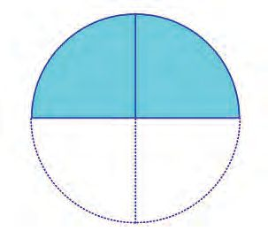
Figure fig_ch03_p054_04 (Page 54)
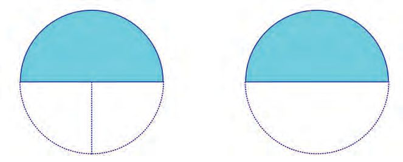
Figure fig_ch03_p054_05 (Page 54)
Figure fig_ch03_p054_06 (Page 54)
 Figure fig_ch03_p055_01 (Page 55)
Figure fig_ch03_p055_01 (Page 55)
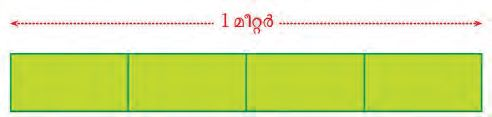
Figure fig_ch03_p055_02 (Page 55)
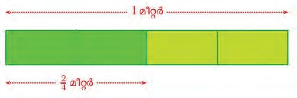
Figure fig_ch03_p055_03 (Page 55)
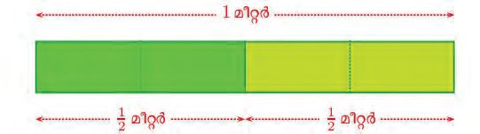
Figure fig_ch03_p055_04 (Page 55)
 Figure fig_ch03_p056_01 (Page 56)
Figure fig_ch03_p056_01 (Page 56)
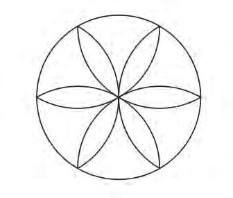
Figure fig_ch03_p056_02 (Page 56)
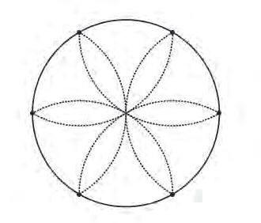
Figure fig_ch03_p056_03 (Page 56)
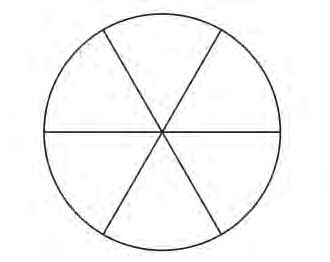
Figure fig_ch03_p056_04 (Page 56)
 Figure fig_ch03_p057_01 (Page 57)
Figure fig_ch03_p057_01 (Page 57)
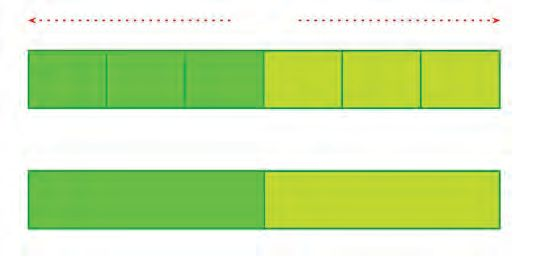
Figure fig_ch03_p057_02 (Page 57)
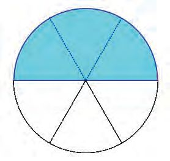
Figure fig_ch03_p057_03 (Page 57)
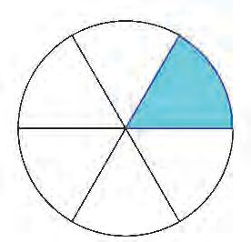
Figure fig_ch03_p057_04 (Page 57)
 Figure fig_ch03_p058_01 (Page 58)
Figure fig_ch03_p058_01 (Page 58)
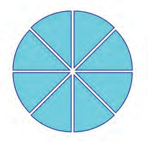
Figure fig_ch03_p058_02 (Page 58)
 Figure fig_ch03_p059_01 (Page 59)
Figure fig_ch03_p059_01 (Page 59)
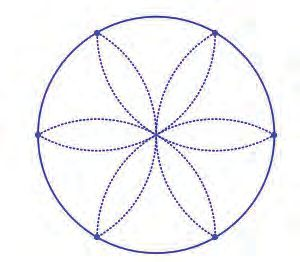
Figure fig_ch03_p059_02 (Page 59)
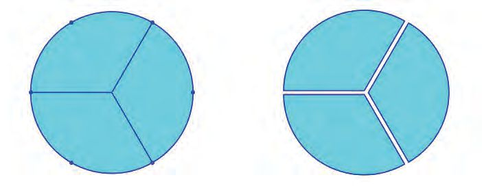
Figure fig_ch03_p059_03 (Page 59)
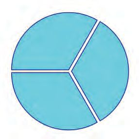
Figure fig_ch03_p059_04 (Page 59)
 Figure fig_ch03_p060_01 (Page 60)
Figure fig_ch03_p060_02 (Page 60)
Figure fig_ch03_p060_01 (Page 60)
Figure fig_ch03_p060_02 (Page 60)
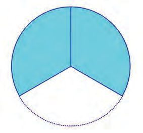
Figure fig_ch03_p060_03 (Page 60)
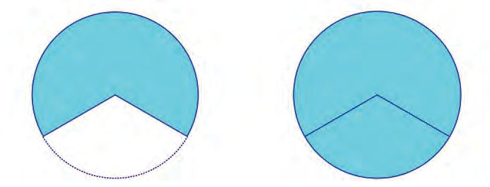
Figure fig_ch03_p060_04 (Page 60)
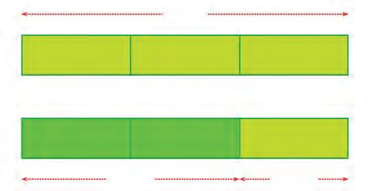
Figure fig_ch03_p060_05 (Page 60)
 Figure fig_ch03_p061_01 (Page 61)
Figure fig_ch03_p061_01 (Page 61)
 Figure fig_ch03_p061_02 (Page 61)
Figure fig_ch03_p061_02 (Page 61)
 Figure fig_ch03_p061_03 (Page 61)
Figure fig_ch03_p061_03 (Page 61)
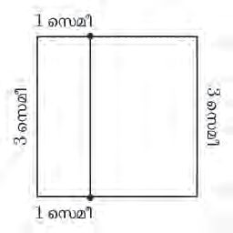
Figure fig_ch03_p061_04 (Page 61)
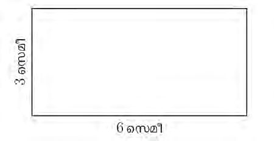
Figure fig_ch03_p061_05 (Page 61)
Figure fig_ch03_p061_06 (Page 61)
 Figure fig_ch03_p062_01 (Page 62)
Figure fig_ch03_p062_01 (Page 62)
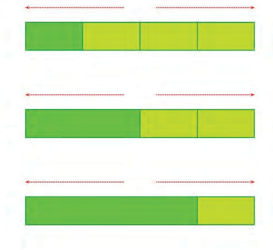
Figure fig_ch03_p062_02 (Page 62)
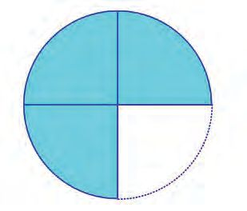
Figure fig_ch03_p062_03 (Page 62)
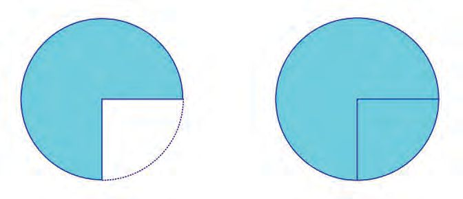
Figure fig_ch03_p062_04 (Page 62)
 Figure fig_ch03_p063_01 (Page 63)
Figure fig_ch03_p063_01 (Page 63)
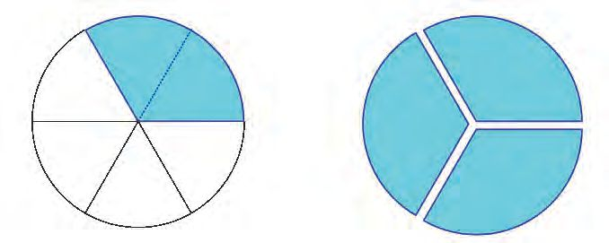
Figure fig_ch03_p063_02 (Page 63)
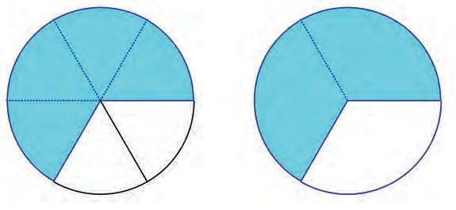
Figure fig_ch03_p063_03 (Page 63)
 Figure fig_ch03_p064_01 (Page 64)
Figure fig_ch03_p064_01 (Page 64)
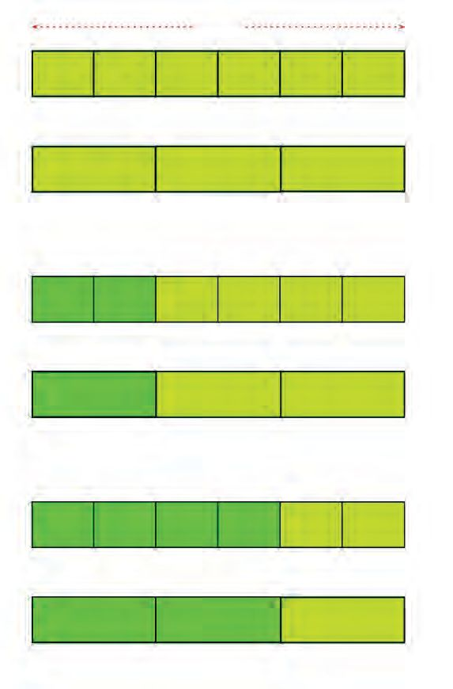
Figure fig_ch03_p064_02 (Page 64)
 Figure fig_ch03_p066_01 (Page 66)
Figure fig_ch03_p066_01 (Page 66)
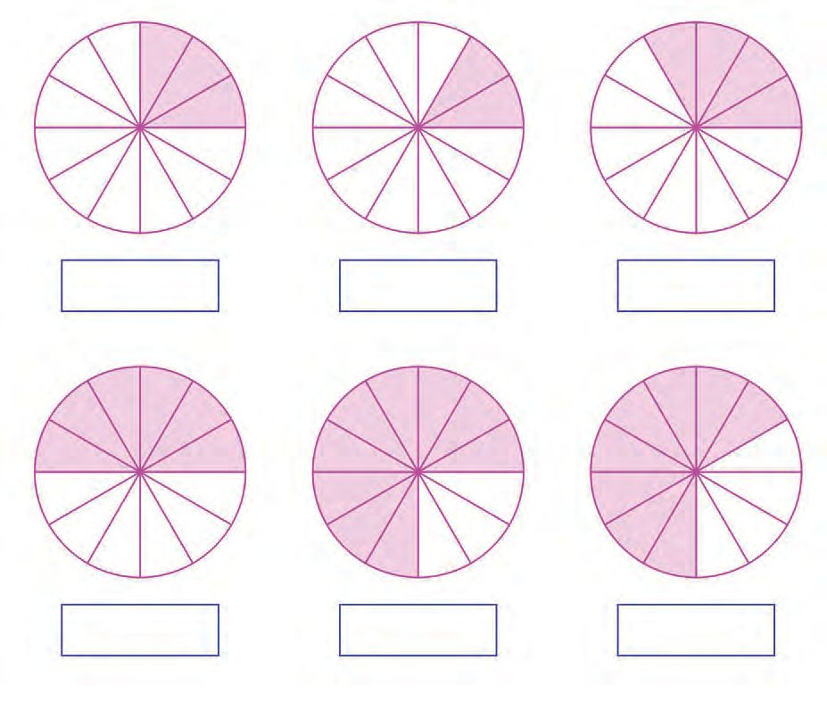
Figure fig_ch03_p066_02 (Page 66)
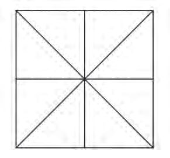
Figure fig_ch03_p066_03 (Page 66)